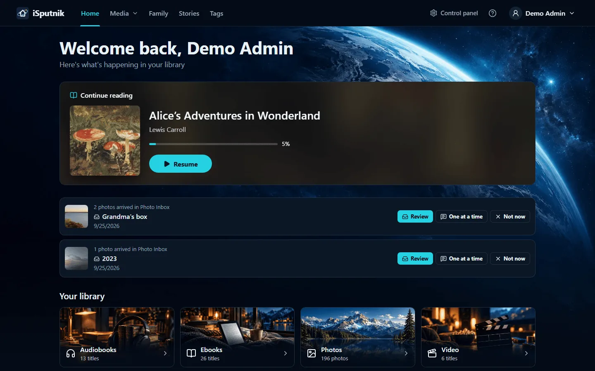

Movies belong here, too.
Give your movies and TV shows a home in your digital library. Connect iSputnik.video and make it a movie night.
Explore movies & TVBeta SELF-HOSTED. FREE. OPEN SOURCE.
The books you love. The movies you return to.
The photos and stories you keep.
Bring them home to a library on your own server.

At home. Your reading, listening and family updates, together on your home page.
Actual app screenshotsGive your movies and TV shows a home in your digital library. Connect iSputnik.video and make it a movie night.
Explore movies & TVEnjoy iSputnik on the big screen with the Android TV and Fire TV app.
Explore the TV appEVERY APPLICATION
One home for all of it, and the same promises in every corner: no cloud needed, no ads, no hidden costs.
.m4b includedONE HOME. EVERYTHING CONNECTED.
A photo belongs to an album, a person and a family story. A book becomes a favorite you share. Your library grows around the people who use it.
One home server. A place for everyone.
Read. Listen. Watch. Play. Remember.
MAKE IT YOURS
Everyone in the house picks their own theme in their profile. It follows them to every device — and to the TV.
System follows the device: Plain light by day, Plain dark when the phone or computer switches. The TV always wears the dark form of your theme.
PRIVATE BY DESIGN
Cloud services rent your memories back to you — and read them while they do. iSputnik turns that around: the software comes to your files, on a computer in your home, and answers to no one but you.
Everything runs on your own server and keeps working when the internet doesn’t. No account with us, no servers of ours to go down or shut down.
No adverts, no analytics, no telemetry. Nobody profiles what you read, watch or photograph — there is nobody on the other end.
Free and open source under the AGPL-3.0. No subscription, no premium tier, no per-photo storage plan. Your disks, your rules.
Everyone has their own account. Photos backed up from a phone land in a library only its owner can open — administrators included.
iSputnik reads your folders where they are and never renames, moves or deletes the originals. Switch it off and everything is exactly where you left it.
Face recognition runs on your own machine, in a container beside iSputnik. Not one photo is sent away to be analysed.
Want covers, film details or maps? Those lookups are optional, and they ask public services only for what each lookup needs — never for your files.
HOW IT WORKS
No uploading, no renaming, no sorting first. iSputnik comes to your files, the way you already keep them.
# On Unraid: Apps → search “iSputnik” → Install
# Anywhere else with Docker:
$ docker compose up -d
✓ isputnik-home started
# Then open it and create the first account:
→ http://your-server:4000Want films or games too? Add the video or games container beside it, and they join the same sign-in.
DOWNLOAD
One container for your library, add-ons when you want them, and an app for the TV. All free.
docker compose up -d.docker pull ghcr.io/isputnikdotnet/isputnik.homeBetaStill in Beta. Your data is looked after — the database is copied before every upgrade, and backups can be scheduled and restored — but screens still change and new things arrive often. Keep your own copies of anything irreplaceable. What Beta means
Installation guideEach runs beside iSputnik.home and is in Unraid Community Applications too.
For Android TV and Fire TV. Install it with the Downloader app while the store versions are on their way.
CONTRIBUTE
iSputnik is a family project, built for one household and shared with everyone. It’s in Beta, and the most useful help is often the simplest: telling us what happens on your hardware, with your media.
You run hardware and libraries we don’t have. A bug report with your version and logs is genuinely valuable.
Say what you’re trying to do, not only the feature you picture — the need often fits the design in a better way.
Spotted something wrong, confusing or out of date in the docs? A small pull request is very welcome.
Bug fixes and focused changes are welcome. For anything large, open an issue first — it can save you a weekend.
SUPPORT
Stuck, curious, or found something broken? Here’s where to go. Ask in English or Russian.
Found a security problem? Please report it privately, never as a public issue.
QUESTIONS
The things people ask first. More answers live in the FAQ and the guides.
A computer that stays on at home and runs Docker — a NAS, a mini PC or an Unraid server. On Unraid, iSputnik is in Community Applications. Then open it in a browser and follow the first-run setup.
It’s in Beta, and one family uses it every day. The database upgrades itself and is copied before every new version touches it, backups can be scheduled and restored from the control panel, and going back to the previous version is a documented step. What still moves is the app itself: screens change and new things arrive often. It’s a family project shared with anyone who finds it useful — not a product with a support team — so keep your own copies of anything irreplaceable.
No. iSputnik reads your folders where they are and never renames, moves or deletes the originals. Its own database and covers live in a folder of their own, and backups never touch your media.
Movies & TV and Games are optional containers that run beside iSputnik.home, and face recognition is another. Add the ones you want — the library works fine without them.
Yes. It’s open source under the AGPL-3.0, with no subscription, no account with us and no paid tier. You run it, so you own it.
Everyone gets their own account, and you choose who opens which library. Photos backed up from a phone go into that person’s own library, which not even the administrators can open.
Yes — add it to your home screen and it works like an app, with downloads you can read and listen to offline. Phones can back up their photos too, using an app such as PhotoSync, at home or over a VPN.
Yes, once you put it behind HTTPS. It’s built for a home network first, so the guide walks through the settings to turn on before you share the address.
English and Russian, chosen by each person on their own profile.
ROADMAP
What we’re building now, what comes next, and what we’re thinking about. No dates — it ships when it’s right.
NEWS FROM ORBIT
One report with what a bug report needs: versions, containers, libraries and recent failures. Your family’s names, folders and addresses stay out unless you include them.
Films start converting in memory, people watching together share one conversion, and favourites can be kept ready to play.
A Dashboard that says what needs you, every application in one place, and settings that read like your phone’s.